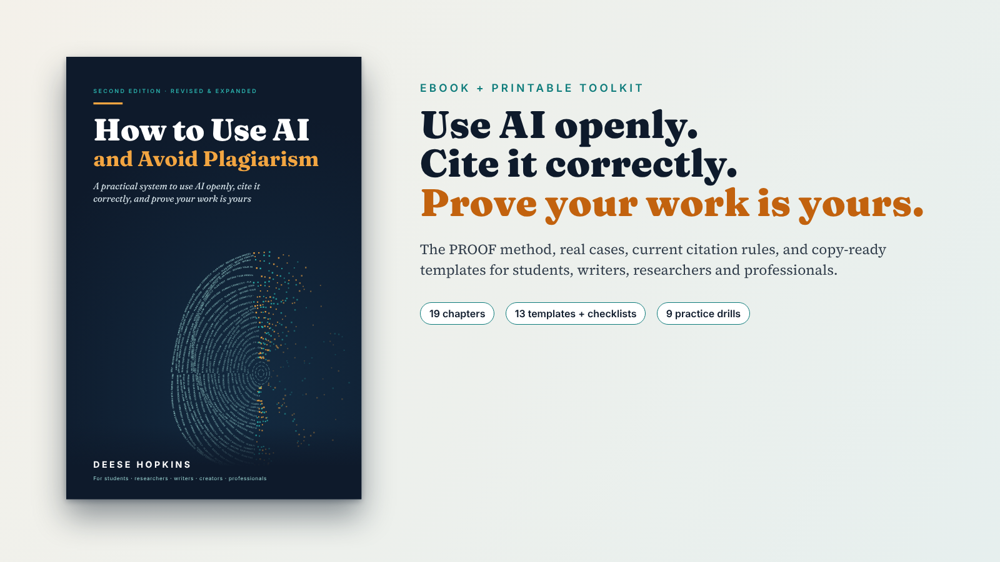

Plan first
Make the thinking yours before a tool enters the room.
Second edition · revised & expanded
A practical system for using AI openly, citing it correctly, and proving your work is yours.

For students, researchers, writers, creators and professionals.
PROOF turns good intentions into a record you can defend to a teacher, editor, client or reader.
Make the thinking yours before a tool enters the room.
Keep a clear trail of what you asked, changed and checked.
Catch invented sources and quiet distortions before they travel.
Say how AI helped, in language that fits the situation.
Make every borrowed word and idea traceable.
01 Two citation checks for invented and distorted sources.
02 The AI Contribution Ladder, from spellcheck to co-author.
03 What detectors can and cannot prove, including false positives.
04 A step-by-step response plan if your work is flagged.
05 Current APA, MLA and Chicago formats, templates and checklists.
The complete edition
Colour PDF and EPUB. Instant access. Free updates when the rules change.
Choose your edition